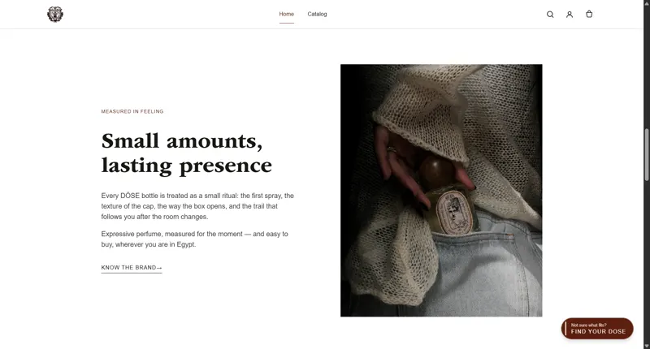
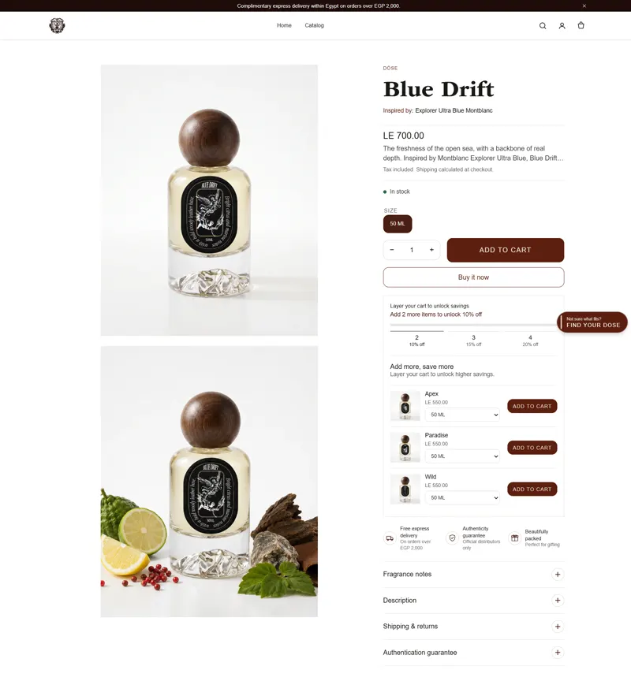

Problem المشكلة
Niche fragrance sells on identity and story, but its most important quality, the scent, can’t pass through a screen, and undecided visitors leave.
Register / Work / DÖSE Fragrance
Entry قيد
Selling scent through a screen.
A premium Shopify experience for an Egyptian niche fragrance brand: visual storytelling that carries what the customer can’t smell, a guided “Find Your DÖSE” discovery flow, and the conversion mechanics — cart, discounts, SEO — engineered underneath.

Problem المشكلة
Niche fragrance sells on identity and story, but its most important quality, the scent, can’t pass through a screen, and undecided visitors leave.
My part دوري
Brand direction for the store, the product page and discovery UX, and the Shopify implementation: Liquid templates, cart and discount logic, structured data, and performance work.
Outcome النتيجة
A brand-true store, a designed path from undecided to a confident choice, and a catalogue search engines can read. Qualitative outcomes only. No invented figures.
السياق
DÖSE is an Egyptian niche fragrance brand competing in a category where the product’s most important quality — its scent — cannot pass through the screen. Everything the store communicates has to be carried by imagery, language, pacing, and trust.
“Will I like it?” is the question every fragrance customer is silently asking. The experience has to replace the counter test: describe scent in evocative but concrete language, situate each fragrance in a mood and moment, and guide the undecided instead of presenting a wall of bottles.
النهج
I owned the digital experience: brand direction for the store, the product page and discovery UX, and the Shopify implementation — Liquid templates, cart and discount logic, structured data, and performance work.
Two paths, deliberately designed: customers who know get a fast, confident route to product and checkout; customers who don’t get “Find Your DÖSE” — a short, sensory quiz that narrows the catalogue to a personal recommendation. The store’s job is to make sure nobody leaves because they couldn’t decide.
الاكتشاف
When customers struggle to choose, don’t add more information — add a conversation that narrows it.
“Find Your DÖSE” — replacing the fragrance counter with a conversation.
المتجر
The visual direction leans into stillness: large imagery, disciplined typography, and restrained motion — closer to editorial perfume photography than to a discount storefront. Language does the heavy lifting, describing scent in scenes and moments rather than ingredient lists alone.



البناء
المفاضلات
Every atmospheric image and motion flourish costs milliseconds. The discipline was treating performance as part of the brand — a premium store that stutters isn’t premium.
Shopify draws hard lines around checkout. Rather than fighting the platform, the design spends its ambition where the platform is flexible — storytelling, discovery, and the cart — and keeps checkout native and trusted.
النتيجة
Qualitative outcomes — no invented figures.
The digital experience matches the ambition of the product it sells.
Undecided visitors have a designed path to a confident choice instead of a bounce.Documented
Structured data and clean information architecture make products legible to search engines.Stated
When customers struggle to choose, don’t add more information — add a conversation that narrows it.
E-commerce for sensory products is a writing and sequencing problem as much as a design problem. The quiz taught the broader lesson.
{kind=link}
{kind=link}
{kind=link}
{kind=link}